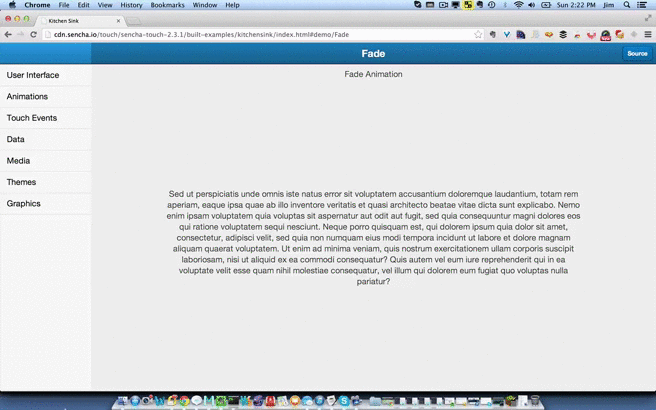

jQuery Mobile
Deciding on a cross-platform tool (CPT) when developing mobile applications is really only the first step of a larger journey. When you choose a web-based CPT (PhoneGap, for example), you're typically faced with the decision of what UI framework to choose as well. The good news is that there are number of powerful options available. We'll take a brief look at a few of these in this post. There's a wide range of what's available in a UI framework – some focus entirely on widgets (UI components), others provide light app framework functionality and still others provide a more comprehensive set of behaviors covering widgets and application framework concerns. The "right" choice for your project will depend largely on what you need, your team's background and what kind of control you want to retain over certain aspects of the application architecture.
Really - there are SO many interesting options, it can feel overwhelming even if you're a veteran of HTML5-based mobile development. I will include a list of additional frameworks at the end in case you'd like to explore beyond the few we cover in this post.
jQuery Mobile is arguably the most widely used mobile framework - benefiting from association with the nearly ubiquitous jQuery project. Due to its recognition and association with jQuery-based open source development, jQuery Mobile boasts a huge number of 3rd party plugins, extensions, tools, themes and more.
Developers writing mobile and hybrid mobile apps using jQuery Mobile will encounter the following:
data-* attributes. For example, a "page" in a jQuery Mobile application is simply a DOM element with data-role="page" attribute/value on it. Experienced web developers will pick up these kinds of framework conventions quickly.Despite its popularity, jQuery Mobile has been criticized for performing poorly in mobile browsers. The jQuery Mobile team continues to work to improve the framework, including performance issues. If your team opts for jQuery Mobile, avoiding deeply nested DOM structures & unnecessary reflows and investigating the use of libraries like FastClick can help you avoid some of the typical pitfalls that have earned jQuery Mobile the "slow" label.
jQuery Mobile's site currently lists 22 built-in widgets (though the number of custom/3rd party widgets is much higher). Among them are header, footer, navbar, listview, slider popup and more (all the basics you would expect). Creating customized widgets is likely a moderate amount of effort for most developers. jQuery Mobile's good documentation and examples will be helpful for any team. You can view a list of demos here.
The screen capture below demonstrates one of jQuery Mobile's widgets: the responsive grid listview:

jQuery mobile is free and open source (MIT licensed).

Telerik's Kendo UI Mobile framework has emerged as a powerful and performance-minded framework for mobile web and hybrid mobile applications. Kendo UI Mobile provides both UI widgets and app framework functionality. Kendo UI Mobile is part of a larger Kendo UI framework that can target both desktop and mobile devices. In addition, Kendo UI Dataviz is arguably one of the best data visualization libraries available for both desktop and mobile web clients*.
Developers writing mobile and hybrid mobile apps will encounter the following:
data-* attributes. For example, a "view" in a Kendo UI Mobile application is a DOM element with data-role="view". This naturally extends to Kendo UI Mobile's widgets as well, since (for example) an unordered list element can be made into a "listview" element simply by adding data-role="listview" to the element.span to the firstName value of a view model, developers simply include this in the markup: <span data-bind="text: firstName"></span>. Frameworks supporting two-way binding often help eliminate the same tired boilerplate code necessary in traversing DOM structures to retrieve state (user input, etc.). This can be a big productivity boost for your team.Kendo UI Mobile's site lists 13 built-in widgets, ranging from ListView, ModalView, and TabStrip to Navbar (including support for header & footer), Drawer and Scroller (and more). Kendo UI Mobile supports creating custom widgets as well.
The screen capture below demonstrates a couple of Kendo UI Mobile's adaptive widgets: the Grid and Scheduler. You can view additional Kendo UI Mobile demos here.

Kendo UI mobile is a paid framework which starts at $199 (includes support for 1 year).

Sencha will be a recognizable name to many web & mobile developers - likely due to their response to Mark Zuckerberg's assertion that "HTML5 Wasn't Ready". Sencha went on to prove that HTML5 is, indeed, ready for many complex use cases in mobile applications. Sencha Touch - Sencha's mobile focused HTML5 development platform – goes much further than providing only widget-focused features.
Sencha recently updated Sencha Touch so that their device APIs fully support Apache Cordova (i.e. - PhoneGap). Similar to Kendo UI Mobile, Sencha Touch makes use of HTML5 and CSS3 (taking advantage of hardware acceleration where possible) to create web-based UIs for mobile apps that aim to rival native UI performance. Developers building projects with Sencha Touch can expect the following:
Components are a key part of Sencha Touch's architecture. Among the 50 built-in components are ones such as Carousel, Slider, DataView, List, DatePicker and more. In other words - like the frameworks we've looked at so far, the essential things you'd expect plus a bit more. The screen capture below is showing some of the animation demos in the "Kitchen Sink" demo application, which highlights many features available in Touch:

Sencha Touch has a wide array of licensing options (which can be seen here). It's free for commercial use (and a GPLv3 option is also available). Sencha offers paid support options for Sencha Touch, starting at $1395 for a 5-developer package.

Chocolate Chip UI's beta debuted on Github roughly 3 years ago. Currently at version 3.0.6, the project has been gaining recognition as a powerful and performance-minded option for both mobile web and hybrid mobile applications targeting iOS, Android and Windows Phone 8. Chocolate Chip UI's site lists 12 widgets, but simply skimming the documentation will reveal many more. Chocolate Chip UI provides a substantial amount of UI/widget focused features, but also ventures somewhat into "application framework" territory by providing a number of utility methods & view transition features – though it stops short of client-side routing (though there's nothing preventing you from integrating any number of routing libraries).
Developers using Chocolate Chip UI will encounter the following:
As mentioned above, Chocolate Chip UI's home page lists 12 widgets – among them things like Popup, Paging, Range, Switch and multiple types of Lists. However, as you review the documentation, you'll notice mention of additional widgets such as slide out menus, masks (semi-transparent overlays), split layouts (for tablets) and more. You can see a few of these in the screen capture below (specifically, range/slider and pop-over):

Chocolate Chip UI can be licensed either under BSD or commercially. For commercial terms, you need to contact Sourcebits to get a quote. I reached out to Sourcebits to get more information on commercial licensing, and they were very prompt & friendly in replying:
"...our terms for commercial use are an acknowledgment that Sourcebits’ Chocolate Chip UI was used in the creation of the app, something along the lines of "Powered by Chocolate Chip UI”, either in the app’s splash screen or ‘About’ page with tap/link back to ChUI’s awesome landing page, as well as permission to use the brand’s name/logo on our website. In addition we might also wish to collaborate with the brand to create a case study around their use of ChUI. We’d have the same asks if a ChUI web app were being deployed for internal use by an enterprise, too."
Markus Falk has a fantastic mobile frameworks comparison tool which you may find quite useful in evaluating which options will work for your team. One thing to bear in mind: this comparison chart doesn't differentiate between UI frameworks and cross-platform tools (like PhoneGap), so it's useful if you're looking up supported features for a given framework or comparing two frameworks of the same type (i.e. – apples-to-apples comparison of two or more UI libraries, or CPTs, etc).
This post can't possibly cover all the UI framework options available - and choosing which ones to write about was extremely difficult, given the amazing number of good choices out there. I'd like to list a few more here to give you the option of further exploring which UI framework(s) may work best for you. Bear in mind that these are web-based UI frameworks for mobile web or hybrid mobile solutions that make use of web-based assets (like PhoneGap):
Have you used any of these options? If so, we'd love to hear about your experience. Feel like one is missing? Let us know! We'd love to hear what you've been using.
* I've used Raphael and D3.js - and love both (not to mention, both are free frameworks). I think very highly of Kendo UI Dataviz primarily because of the wide browser support (it uses canvas, SVG and VML, depending on the browser) and because of the accessible/intuitive API.